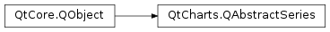

QtCharts.QAbstractSeries¶
Inherited by: QtCharts.QCandlestickSeries, QtCharts.QAbstractBarSeries, QtCharts.QHorizontalPercentBarSeries, QtCharts.QHorizontalStackedBarSeries, QtCharts.QPercentBarSeries, QtCharts.QBarSeries, QtCharts.QHorizontalBarSeries, QtCharts.QStackedBarSeries, QtCharts.QAreaSeries, QtCharts.QXYSeries, QtCharts.QLineSeries, QtCharts.QSplineSeries, QtCharts.QScatterSeries, QtCharts.QPieSeries, QtCharts.QBoxPlotSeries
Note
This class was introduced in Qt 5.7.
Synopsis¶
Functions¶
- def
attachAxis(axis) - def
attachedAxes() - def
chart() - def
detachAxis(axis) - def
hide() - def
isVisible() - def
name() - def
opacity() - def
setName(name) - def
setOpacity(opacity) - def
setUseOpenGL([enable=true]) - def
setVisible([visible=true]) - def
show() - def
useOpenGL()
Signals¶
- def
nameChanged() - def
opacityChanged() - def
useOpenGLChanged() - def
visibleChanged()
Detailed Description¶
-
PySide2.QtCharts.QtCharts.QAbstractSeries.SeriesType¶
-
PySide2.QtCharts.QtCharts.QAbstractSeries.attachAxis(axis)¶ Parameters: axis – PySide2.QtCharts.QtCharts::QAbstractAxisReturn type: PySide2.QtCore.bool
-
PySide2.QtCharts.QtCharts.QAbstractSeries.attachedAxes()¶ Return type:
-
PySide2.QtCharts.QtCharts.QAbstractSeries.chart()¶ Return type: PySide2.QtCharts.QtCharts::QChart
-
PySide2.QtCharts.QtCharts.QAbstractSeries.detachAxis(axis)¶ Parameters: axis – PySide2.QtCharts.QtCharts::QAbstractAxisReturn type: PySide2.QtCore.bool
-
PySide2.QtCharts.QtCharts.QAbstractSeries.hide()¶
-
PySide2.QtCharts.QtCharts.QAbstractSeries.isVisible()¶ Return type: PySide2.QtCore.bool
-
PySide2.QtCharts.QtCharts.QAbstractSeries.name()¶ Return type: unicode
-
PySide2.QtCharts.QtCharts.QAbstractSeries.nameChanged()¶
-
PySide2.QtCharts.QtCharts.QAbstractSeries.opacity()¶ Return type: PySide2.QtCore.qreal
-
PySide2.QtCharts.QtCharts.QAbstractSeries.opacityChanged()¶
-
PySide2.QtCharts.QtCharts.QAbstractSeries.setName(name)¶ Parameters: name – unicode
-
PySide2.QtCharts.QtCharts.QAbstractSeries.setOpacity(opacity)¶ Parameters: opacity – PySide2.QtCore.qreal
-
PySide2.QtCharts.QtCharts.QAbstractSeries.setUseOpenGL([enable=true])¶ Parameters: enable – PySide2.QtCore.bool
-
PySide2.QtCharts.QtCharts.QAbstractSeries.setVisible([visible=true])¶ Parameters: visible – PySide2.QtCore.bool
-
PySide2.QtCharts.QtCharts.QAbstractSeries.show()¶
-
PySide2.QtCharts.QtCharts.QAbstractSeries.type()¶ Return type: PySide2.QtCharts.QtCharts::QAbstractSeries.SeriesType
-
PySide2.QtCharts.QtCharts.QAbstractSeries.useOpenGL()¶ Return type: PySide2.QtCore.bool
-
PySide2.QtCharts.QtCharts.QAbstractSeries.useOpenGLChanged()¶
-
PySide2.QtCharts.QtCharts.QAbstractSeries.visibleChanged()¶
© 2018 The Qt Company Ltd. Documentation contributions included herein are the copyrights of their respective owners. The documentation provided herein is licensed under the terms of the GNU Free Documentation License version 1.3 as published by the Free Software Foundation. Qt and respective logos are trademarks of The Qt Company Ltd. in Finland and/or other countries worldwide. All other trademarks are property of their respective owners.